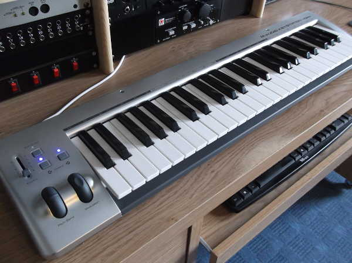
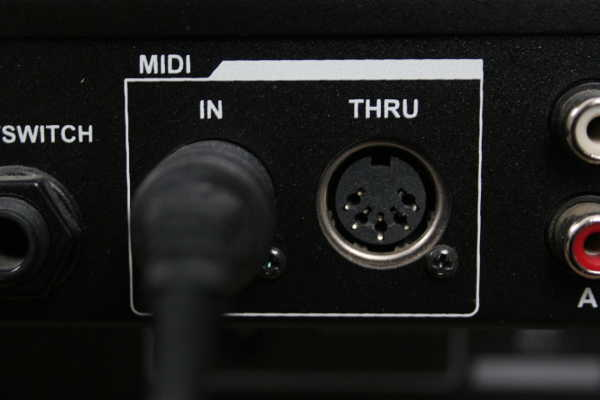

Updated: Tue, 2014-08-19 10:33
A MIDI keyboard is a piano-style keyboard used for sending MIDI data to a computer, or other MIDI devices. MIDI keyboards are a type of MIDI controller. You can think of a MIDI keyboard as a dummy keyboard. They don't produce any sounds themselves but rather, via MIDI data, control sounds in other devices, such as a synth on your computer or an external hardware synth.

Updated: Tue, 2015-01-27 14:29
MIDI (Musical Instrument Digital Interface) is a protocol that allows various electronic instruments and MIDI software to communicate with each other. The standard MIDI connector (5 pin DIN cable) is used to connect MIDI hardware, although some devices can also send MIDI data via USB cables to computers with MIDI software. MIDI software can also communicate using this data, eg. the MIDI sequencer in a program can send this information to a MIDI plugin.

Updated: Tue, 2014-08-19 10:23
An audio server, or sound server, is software that manages the use of audio devices. Such software typically runs in the background. PulseAudio is the standard audio server for desktop audio on Linux, while JACK is the standard audio server for professional audio on Linux.
Updated: Sat, 2014-08-16 18:50
Stems is parts of a song exported/bounced separately. So, a regular pop song in stems could for example contain one stem for guitars, one stem for the vocals, one for the drums, and so on. Stems are commonly used when mixing songs that are already arranged and ready, and just need the actual mixing done. It is also what a mixing engineer most likely will ask you for if you decide to have your song mixed professionally.
Updated: Tue, 2014-08-19 10:31
Modular set ups are where more than one program is used in a set up. JACK allows you to connect and sync various audio programs together so you can benefit from the strengths of individual applications. Session management can be used to manage and recall such complex set ups. A good suite of modular applications is the Non suite, which includes Non timeline, Non mixer and Non sequencer, although any JACK application can be incorporated into a modular set up.
Pages